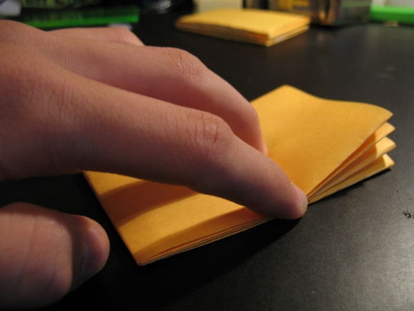
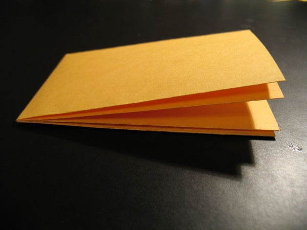
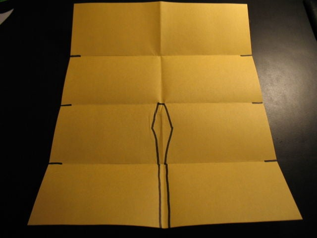
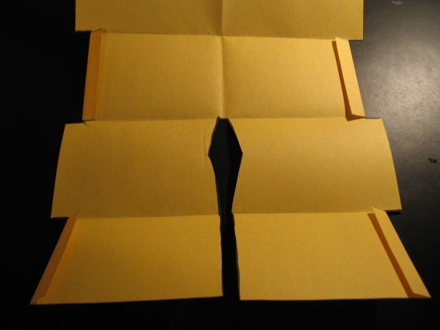
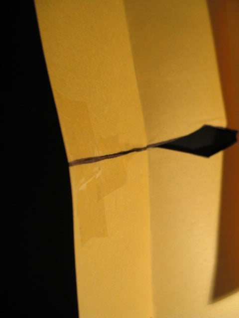
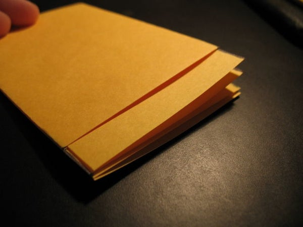
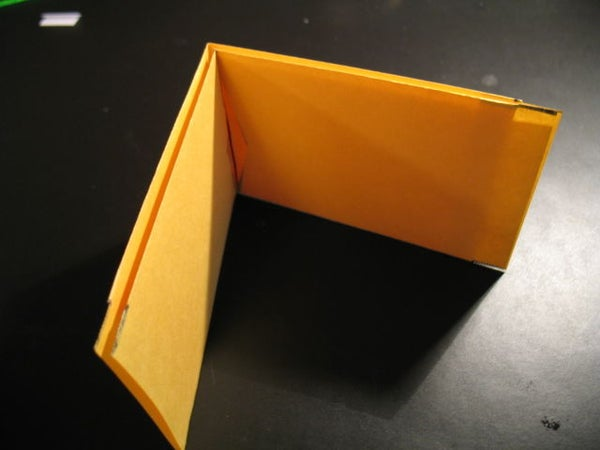
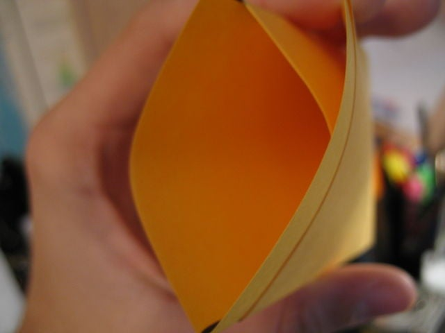
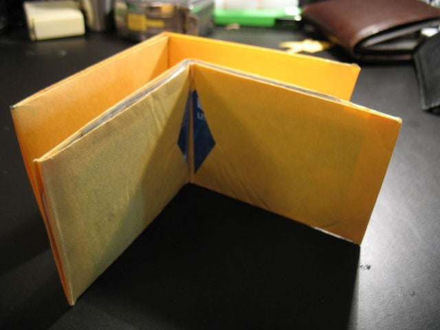

Neatly fold the 8.5"x11" sheet of paper in half (to look like a hamburger shape as opposed to a skinny hot dog fold). open it, and fold the two flaps into the middle, so it is split in 4 (second picture).
Now fold the paper in 1/2 perpendicular to the other folds and crease from the folds you just made. notice how it has a natural tendency to stay closed, this is the basic wallet shape. now unfold.
 Cut along the black lines (viewed from the inside) please note picture comments
Fold the 2nd and 4th flaps from the top inside on either side.
Tape the lower cut (not the diamond) so both sides are flush, your paper will not be flat anymore. NOTE: this step can be done after step 7, it will be harder, but the wallet will lay flatter and be more square. you can also put a small piece of tape at the top of the diamond (on the 2nd panel down) as this is now the wallets weakest point now refold, like in step 2
Neatly crease the wallet starting from the back to the edges. 2 flaps should be sticking out of each end of the wallet.
 I finally figured out an easy way to explain this you will lock both ends separately. starting from the inside, and going to the outside, there will be a flap, then a pocket, then another flap, and another pocket. We'll call these 1,2,3,4 respectively. Fold the inner flap (3) into the inner pocket (2), then fold the outer flap (1) over 2 and 3, and into the outer pocket (4). do the same to the other end. i would suggest taping flap 3 inside the pocket to hold the wallet together better.
This wallet should easily hold tons of cash, 4 easily accessible credit cards, and 2-4 more locked credit cards the outside (edge) credit card slot has a flap you tucked in. unfold this flap, put cards in, refold flap, and they should be locked in, you can now put another card in this pocket. this wallet is very durable due to its construction, but feel free to use tyveck or other materials if you have them.
